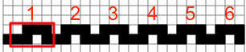
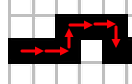
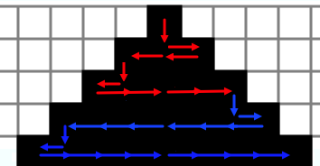
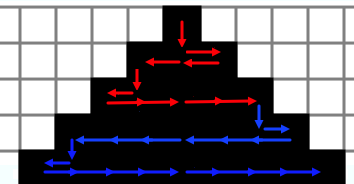

Ratkaisu
Ohjelma toistetaan 6 kertaa, joten aloitamme tutkimalla tavoitekuvasta, millainen osuus siinä toistuu 6 kertaa.

Seuraavaksi tutkimme, millaisista askeleistä tämä osuus koostuu.

Lopuksi määritämme edellä havaitut askeleet suorittavan ohjelman, ja ratkaisu on valmis.
Ohjelma toistetaan 5 kertaa, joten aloitamme tutkimalla, millainen hahmo tavoitekuviossa toistuu 5 kertaa. Voimme löytää alla kuvatunlaisen hahmon: punaiset nuolet kuvaavat hahmon ensimmäisen esiintymän ja siniset toisen.

Seuraavaksi analysoimme hahmon rakennetta.
- Ensimmäinen toisto (punaiset nuolet): 1 askel oikealle, 2 askelta alas, 3 askelta vasemmalle ja 4 askelta ylös.
- Toinen toisto (siniset nuolet): 5 askelta oikealle, 6 askelta alas, 7 askelta vasemmalle ja 8 askelta ylös.
- Seuraavaksi kolmannessa toistossa olisi: 9 askelta oikealle, 10 askelta alas, 11 askelta vasemmalle ja 12 askelta ylös.
Edellä huomataan säännönmukaisuus, että kukin toisto liikkuu oikealle, alas, vasemmalle ja ylös, ja askeleiden määrä kasvaa aina yhdellä. Tällainen askeleiden määrän kasvatus voidaan toteuttaa ohjelmassa arvon N avulla. Ratkaisu näyttää seuraavalta:
Tähän versioon on monta ratkaisutapaa. Alla on esitetty kolme erilaista ratkaisuvaihtoehtoa.
1. ratkaisu

2. ratkaisu

3. ratkaisu
 

Huomaa, että 3. ratkaisu tarvitsee ainoastaan 6 ohjelman toistokertaa tavoitekuvion piirtämiseksi.
Tämä on tietojenkäsittelyä!
Tehtävä käsittelee tietojenkäsittelyn perustavanlaatuista työkalua: halutun toimenpiteen suorittavan ohjelman määritystä (ja siten yleensäkin ohjelmointia). Tietokoneohjelmat koostuu joukosta yksinkertaisia alkeisoperaatioita (tässä kulkemisesta tai N:n kasvattamisesta), jotka tietokone suorittaa.
Tehtävä havainnollisti esimerkiksi seuraavaa ohjelmoinnin peruspilariaseuraavia ohjelmoinnin peruspilareita:
- Toistoa. Tietokoneohjelmissa käytetään varsin usein toistorakenteita (ns. silmukoita), jotka toistavat määritettyjä komentoja useita kertoja peräkkäin. Katso lisää esim. https://fi.wikipedia.org/wiki/Toistorakenne.
- Muuttujia. Ohjelmassa oli mahdollista hyödyntää sekä muuttaa arvoa N. Tietokoneohjelmissa käsiteltäviä arvoja ylläpidetään tyypillisesti tämäntapaisissa muuttujissa, joita ohjelman suorittamat komennot voivat käyttää tai muuttaa. Katso lisää esim. https://fi.wikipedia.org/wiki/Muuttuja_(ohjelmointi).